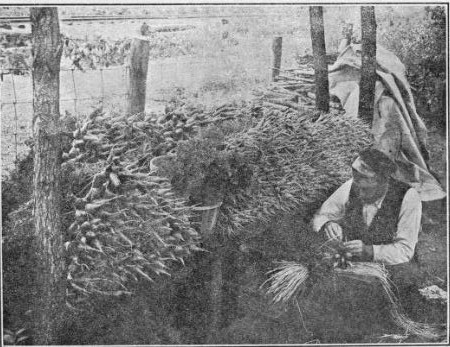

375. Planting Carrot
Description
This section is from the book "Vegetable Gardening", by Ralph L. Watts. Also available from Amazon: Vegetable Gardening.
375. Planting Carrot
Most of the carrot seed used in the United States is grown in England, France and Germany. When the roots are wanted for seed production they must be properly preserved over winter and planted in the open as early as possible in the spring, about 2 x 4 feet apart, to provide sufficient space for the lateral spread of the tops, which attain a height of from 2 to 4 feet. For the production of an early crop of roots, the seeds must be sown as soon in the spring as the ground can be prepared, the short or globular varieties being used for this sowing. A succession of roots is secured by planting the same variety at intervals of two to three weeks or by sowing early, medium and late varieties at the same time. As many consumers prefer the smaller roots, it is customary to use early, small-rooted sorts throughout the season, although the half-long varieties are more largely planted for midsummer, fall and winter use. From 8 to 10 weeks are required to mature the earliest varieties and four or five months for the late. The latest varieties should not be planted in most sections after the middle of June.
Various planting distances are used by different growers. Ten or 12 inches between rows is sufficient space for the small early varieties and 15 inches is ample for any variety if a hand wheel hoe is to be used in cultivating. Some growers prefer to plant 24 to 30 inches apart and then cultivate with a horse.
The necessary amount of seed depends mainly upon the variety and size of roots desired. The small roots are sometimes grown an inch apart in the row, when much more seed is required than when the roots are grown 4 to 6 inches apart. Ordinarily it takes from two to three pounds of seed to plant an acre, or one ounce to 300 feet of drill. For the smallest roots 15 to 20 seeds a foot of row will not be too many, while less than half this number would be satisfactory for late varieties and larger roots. Thinning is universally practiced to secure large roots of uniform size, the distance between plants varying from 3 to 7 inches; 4 or 5 inches, however, provides sufficient space for the development of most varieties.
Carrot seeds germinate slowly, and it is an advantage to sow enough radish seeds with the carrot to mark the rows. Tillage operations may then begin sooner, in order to conserve moisture and control weeds. The seed should not be covered deeper than necessary to furnish the proper supply of moisture; ordinarily 1/2 to 1 inch of soil is sufficient.
376. Fertilizing
The carrot, like other root crops, requires a liberal amount of potash. According to Voorhees, a yield of 15 tons an acre will remove 153 pounds of potash, 48 pounds of nitrogen and 27 pounds of phosphoric acid. These figures indicate the importance of using a high-grade fertilizer. It is likely that a mixture carrying 4 per cent of nitrogen, 6 per cent of phosphoric acid and 10 or 12 per cent of potash will give the best results under most conditions.
Fresh stable manure should never be applied immediately before planting carrots. Rotten manures of any kind may always be used to advantage, and may be applied in liberal amounts.
377. Cultivation
Cultivation should begin as soon as the rows can be seen and repeated at frequent intervals. The knife or wing-form of attachments to wheel hoes should be used at first, to avoid covering the delicate plants. Later, spike-toothed tools may be employed, to secure a deeper mulch of loose soil. More or less hand weeding and hoeing is necessary to destroy weeds in the row.
378. Marketing
It frequently pays to pull and market early carrots before they have reached maturity. This may be a thinning process, by which the remaining plants may be given more room to develop. When the entire crop is removed at one time, and the roots are long, a plow may be run close to the row with cut edge of the furrow next to the plants, and the roots can then be pushed sideways and pulled with ease. The early roots are nearly always bunched. (Figure 73.) It is important to wash the roots well and to grade them carefully before sending to market. Later in the season they are sold in bulk, packed in baskets, crates, hampers or barrels.
Fig. 73. PREPARING CARROTS FOR MARKET.
Carrots are easily held in storage in the manner explained for beets (325). They keep better if not too ripe when harvested. Although yields of 500 bushels an acre are sometimes reported, 300 is considered a good crop.
379. Carro Beetle (Ligyrus Gibbosus)
Carro Beetle (Ligyrus Gibbosus)T is the most destructive insect enemy of the carrot. It resembles the May beetle, although smaller, and measures from to 5/8 of an inch in length. The beetles, which are reddish brown to black, cause most of the injury by feeding on the young plants. They feed mainly under ground and are difficult to control. They also damage sweet potatoes, Irish potatoes, corn, celery and various root crops.
Continue to:
Tags
plants, crops, gardening, cultivated, harvesting, food ,greenhouses, fertiliser, vegitables